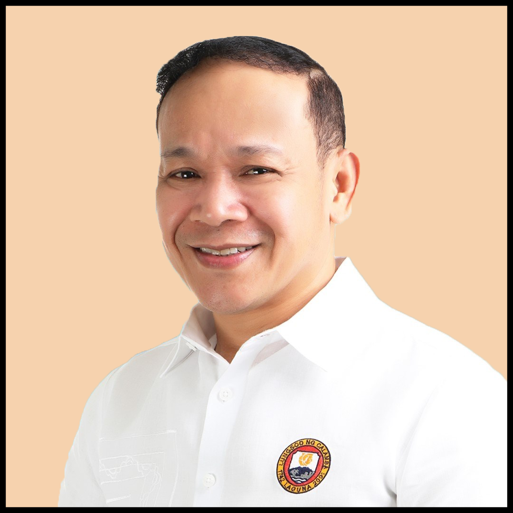
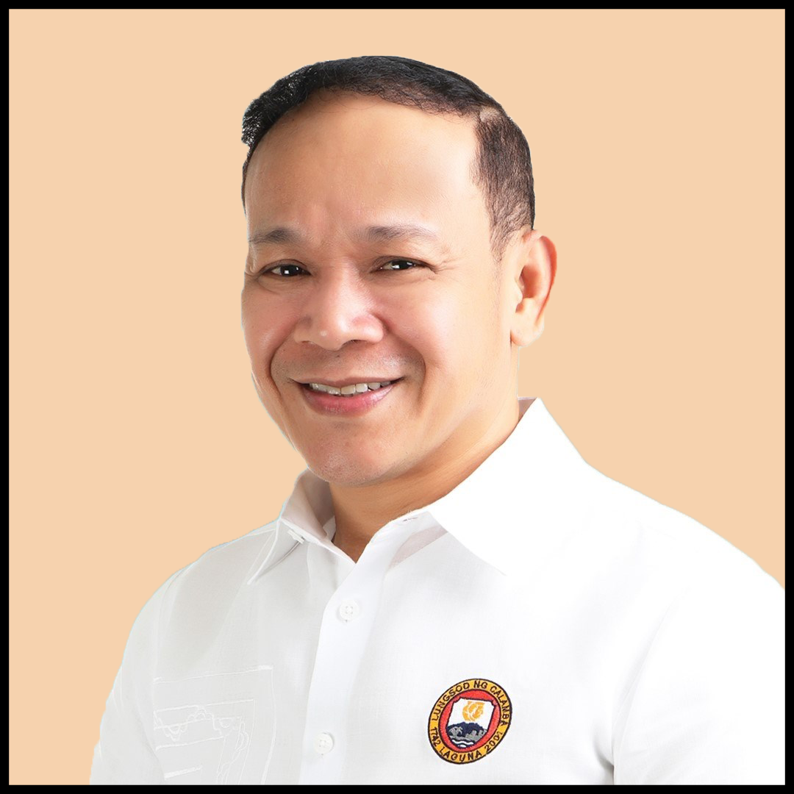

M
A
Y
O
R
S
Background
Ross Rizal is a descendant of national hero Jose Rizal’s younger
half-brother Patricio Rizal, who was also a patriot and a revolutionary. Ross Rizal is a
prominent political figure in Calamba City, Laguna, the birthplace of his illustrious
ancestor. His election as mayor in 2022 marked a significant shift in the city’s
political landscape, ending the Chipeco family’s long-standing influence that spanned
over four decades.
Election
Rizal was a candidate of Partido Demokratiko Pilipino Lakas ng Bayan (PDP-Laban), the ruling
party of President Rodrigo Duterte, in the 2022 Philippine elections. He won the mayoral
position by receiving 116,777 votes, surpassing incumbent Joey Chipeco (Nacionalista Party)
who received 78,325 votes. This victory was seen as a turning point in Calamba City’s
political dynamics, as it signaled the end of the Chipeco dynasty and the rise of a new
leader with a fresh vision.
Previous Role
Before his tenure as mayor, Rizal served as vice mayor under Chipeco from 2019 to 2022.
This role provided him with valuable experience and insights into city governance and
administration. He also learned the challenges and opportunities that the city faced, as
well as the needs and aspirations of its people. He used this knowledge to craft his
platform and agenda for his mayoral campaign.
Current Role and Accomplishments
As the mayor of Calamba City, Rizal’s responsibilities are vast and varied. He oversees
all programs, projects, services, and activities of the city government. He is tasked
with enforcing laws and ordinances, generating resources and revenues, and ensuring the
delivery of basic services and facilities to more than 500,000 residents.
Under his leadership, several initiatives have been launched to improve the lives of
Calamba City’s residents. During his first State of the City Address (SOCA) in July 2023,
Mayor Rizal cited the efforts of the city government which he said changed the face of
leadership, administration, and public service. He highlighted some of his achievements in
his first year in office, such as:
- Improving the city’s health care system by
increasing the number of hospital beds, medical equipment, and personnel; providing free
medicines and consultations to indigent patients; and establishing isolation facilities
for COVID-19 cases.
- Enhancing the city’s education system by providing laptops and
tablets to public school students and teachers; constructing new classrooms and buildings;
and implementing scholarship programs for deserving students.
- Developing the city’s infrastructure by constructing new roads, bridges, drainage
systems, and flood control projects; upgrading the water supply system; and installing
street lights and CCTV cameras.
- Promoting the city’s tourism industry by renovating historical sites and landmarks;
creating new attractions and events; and implementing health and safety protocols for
visitors.
- Supporting the city’s local economy by providing financial assistance
and livelihood opportunities to micro, small, and medium enterprises (MSMEs);
facilitating business permits and licenses; and creating a one-stop shop for investors.
One notable initiative under his administration was his support for local farmers. The
local government provided agricultural inputs for corn, fruits, and high-value crops
farmers. This included 2,150 sacks of fertilizer distributed across 40 barangays. This
initiative reflects his commitment to supporting local agriculture and ensuring food
security in the city.
On Jose Rizal’s 162nd birthday on June 19, 2023, Mayor Rizal expressed his pride
in his constituents’ appreciation for Jose Rizal’s exceptional
life. He led the commemoration ceremonies at the Rizal Shrine, where he unveiled a new
statue of Jose Rizal holding a book and a pen. He also announced that he would allocate
funds for the restoration and preservation of other historical sites related to Jose Rizal
in Calamba City. This shows his dedication to preserving and promoting the city’s rich
history and culture.
Future Plans
Mayor Rizal has expressed his commitment to continue working towards improving Calamba
City’s infrastructure, education system, healthcare facilities, and public services. He
has also emphasized the importance of transparency in governance and has pledged to uphold
this principle throughout his term. He said that he would regularly consult with the
people and listen to their feedback and suggestions. He also vowed to fight corruption and
hold accountable those who abuse their power or misuse public funds. He said that he would
work closely with the national government, the private sector, and the civil society to
achieve his vision of making Calamba City a progressive, livable, and sustainable city.
Summary
Ross Rizal’s journey from vice mayor to mayor has been marked by dedication and a
passion for public service. He is a descendant of national hero Jose Rizal, whose
legacy he honors and emulates. He is a leader who has brought change and development to
Calamba City, ending the dominance of the Chipeco family and ushering in a new era of
governance. He is a mayor who has initiated various programs and projects to improve the
welfare of his constituents, especially in the areas of health, education, infrastructure,
tourism, and agriculture. He is a visionary who has expressed his commitment to continue
working towards his goals and plans for the city, while maintaining transparency and
accountability in his administration. He is Ross Rizal, the mayor of Calamba City.